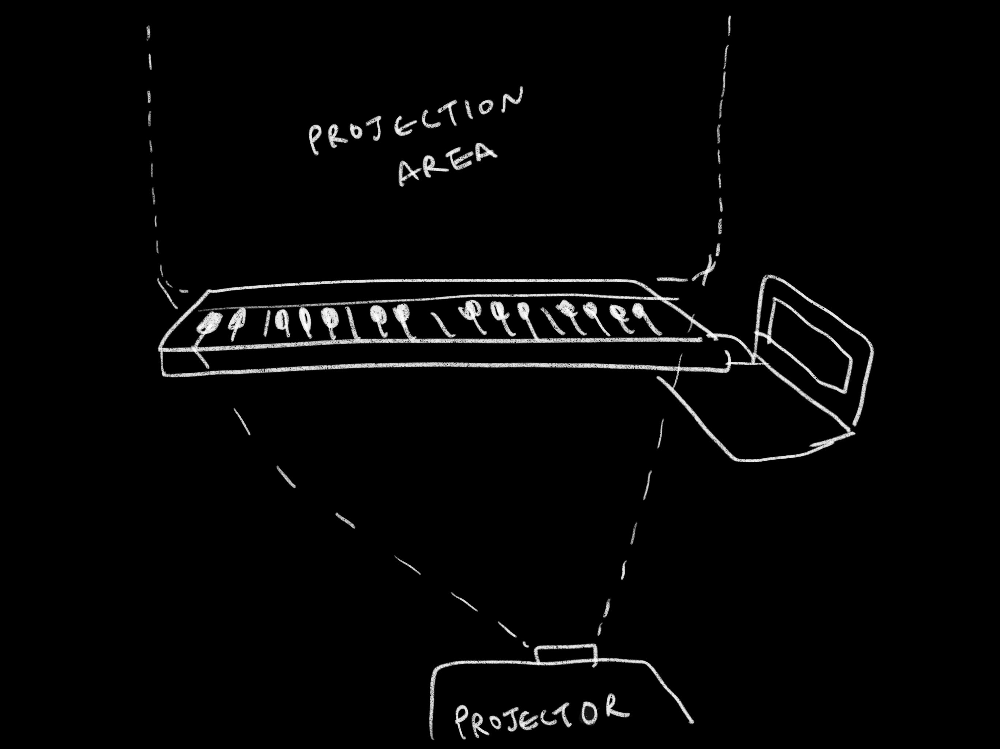
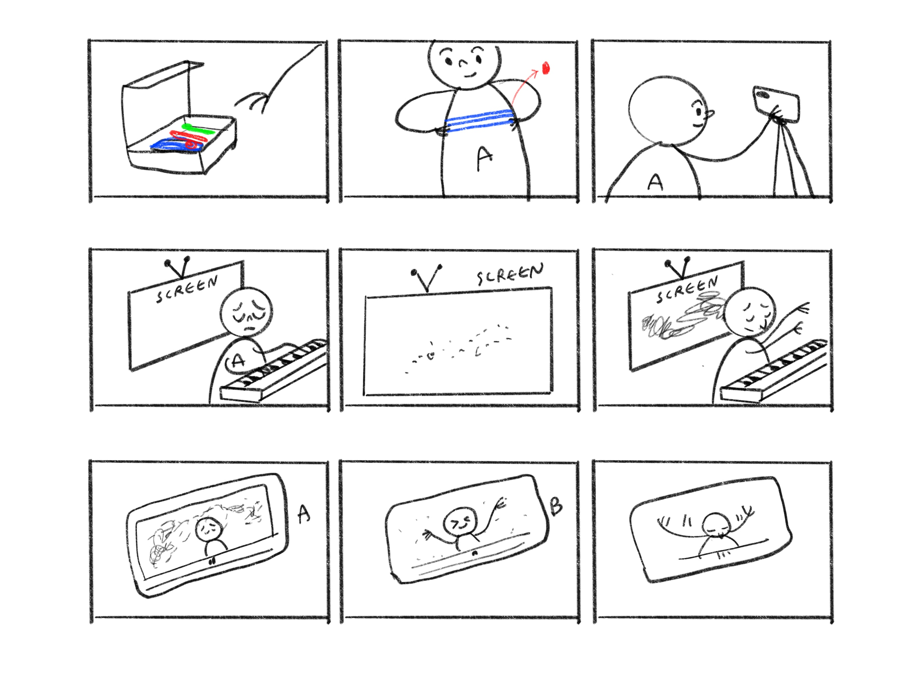
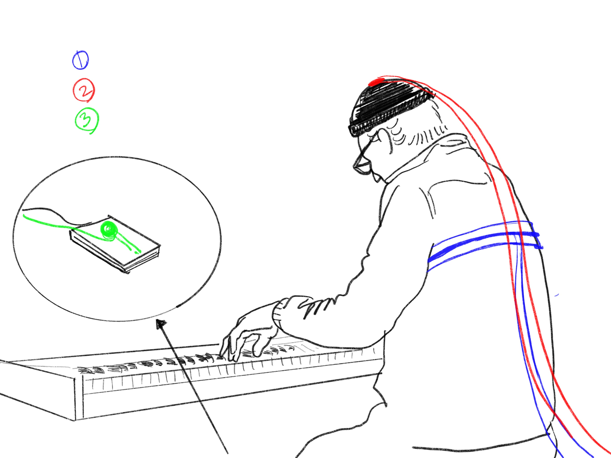
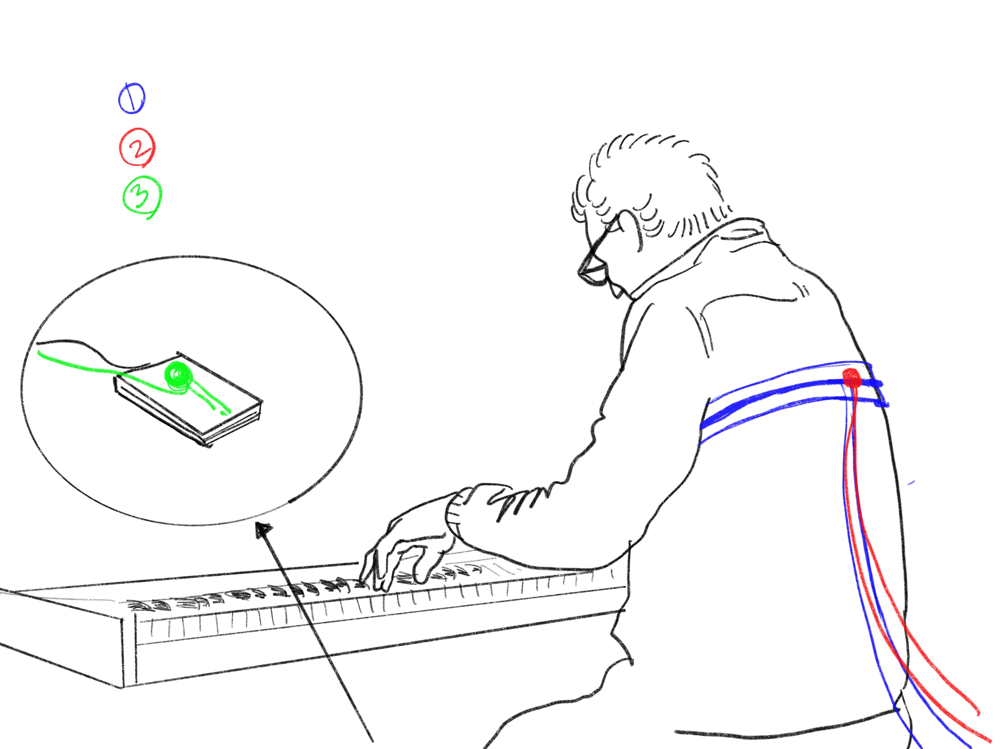

This Music visualizer represents difference between every single pianists in the world.
Some people tend to prefer certain pianist’s interpretation, and some other people prefer different interpretation.
This is a project to make it in a form of data and visualize it, so that we can
see the difference between style of pianists in a visual way.
To visualize different image depend on musician's characteristics.
- Environment Setting
Had to rethink about it because the musician might be affected by the visual, and that might going to be the disturbance.

WEEK 11, Start visualizing & Draw a roadmap
- Storyboard
Each musician get the box of kit, and connect those into their piano. They can get a video, img, and also can broadcast the live performance too.

Option 1, sensor attatched to the hat
Pros: Can get the vibrant acc&gyro parameters Cons: Noooooot fancy

Option 2, sensor attatched to the chest belt(back)
Pros: Can develope to a good looking kit Cons: Can't get gyrometer x value

- Roadmap
Week 10
Storyboarding
Visual concept finalize (try to experiment what I can do)
Connect sensors to the board
Upload reading to blog (wk 3?)
Update blog about the experiment
Week 11
Visal system building(at least 50%)
Start connect board to the system
Update blog
Week 12
Visual system build(finalize)
Finalize connect board to the system
Update blog
Week 13
Entire system improvement
Debugging
Film & update blog
Week 14
Final presentation
- Visual Setting: 3D space
To integrate all of the parameters into one canvas, I used 3D space and represent note by placing spheres.
In this code, which is using just MIDI information now, velocity decides x position, note pitch decide y position and color.